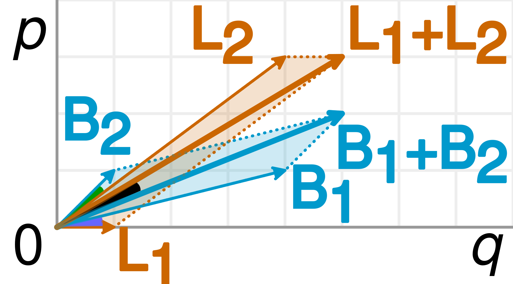

Simpson's Paradox
The puzzle
You and your friend both play a gacha game. At the end of the month you tally up how many pulls each of you made and how many high-star characters you pulled, and you find that your pull rate (high-star pulls ÷ total pulls) is higher than your friend's. Great news.
Next month you do the same thing, and once again your pull rate beats your friend's.
Now you combine the two months' data — adding up the total pulls and the high-star pulls for each person — expecting to confirm your superiority. To your surprise, your friend's combined pull rate is now higher than yours.
What on earth happened?
The answer
This is an instance of Simpson's paradox, a phenomenon in probability and statistics where a trend that appears in several separate groups of data reverses or disappears when the groups are combined. And like many things labelled a "paradox," it is not a genuine logical contradiction — there is nothing inconsistent going on. It is simply counter-intuitive.
(By the way, you should probably get used to the fact that once quantitative reasoning is involved, your intuition is wrong most of the time. So don't rely on it too heavily.)
A vector picture
We can visualise what is going on using vectors in a two-dimensional space. A pull rate is the ratio \(p/q\), where \(p\) is the number of high-star pulls and \(q\) is the total number of pulls. We represent this as an arrow from the origin to the point \((q,\,p)\). A steeper arrow (larger slope) corresponds to a higher pull rate.
The beauty of this representation is that when we combine two months' data, we simply perform vector addition — the combined rate is the diagonal of the parallelogram formed by the two monthly arrows.

Suppose in the first month your pull rate is represented by \(\mathbf{B}_1\) and your friend's by \(\mathbf{L}_1\). As drawn, \(\mathbf{B}_1\) is steeper than \(\mathbf{L}_1\) — your rate is higher. In the second month the arrows are \(\mathbf{B}_2\) and \(\mathbf{L}_2\), and again yours is steeper.
Now we add up the two months. Your combined arrow is \(\mathbf{B}_1 + \mathbf{B}_2\); your friend's is \(\mathbf{L}_1 + \mathbf{L}_2\). As the figure shows, \(\mathbf{L}_1 + \mathbf{L}_2\) is steeper than \(\mathbf{B}_1 + \mathbf{B}_2\).
Look carefully at the diagram: \(\mathbf{L}_1 + \mathbf{L}_2\) is dominated by the long vector \(\mathbf{L}_2\), while \(\mathbf{B}_1 + \mathbf{B}_2\) is dominated by the long vector \(\mathbf{B}_1\). This is the key insight — length matters. The sum of two vectors is pulled toward whichever addend is longer.
Notice further that \(\mathbf{L}_2\) is steeper than \(\mathbf{B}_1\). So the long, steep \(\mathbf{L}_2\) drags \(\mathbf{L}_1 + \mathbf{L}_2\) upward enough to overtake \(\mathbf{B}_1 + \mathbf{B}_2\).
To produce the situation where \(\mathbf{B}_1\) is steeper than \(\mathbf{L}_1\) and \(\mathbf{B}_2\) is steeper than \(\mathbf{L}_2\), yet \(\mathbf{L}_1 + \mathbf{L}_2\) is steeper than \(\mathbf{B}_1 + \mathbf{B}_2\), you need:
- Among \(\mathbf{B}_1\) and \(\mathbf{B}_2\), one is long and the other is short; likewise for \(\mathbf{L}_1\) and \(\mathbf{L}_2\).
- The longer of \(\mathbf{L}_1, \mathbf{L}_2\) is steeper than the longer of \(\mathbf{B}_1, \mathbf{B}_2\).
What does "length" mean here? Since the endpoint of an arrow is \((q,\,p)\), a long arrow simply means a large number of total data points.
A concrete example
| Month 1 | Month 2 | Combined | ||||
|---|---|---|---|---|---|---|
| High-star / Total | Rate | High-star / Total | Rate | High-star / Total | Rate | |
| You | 5 / 10 | 0.50 | 15 / 50 | 0.30 | 20 / 60 | 0.33 |
| Friend | 40 / 100 | 0.40 | 1 / 5 | 0.20 | 41 / 105 | 0.39 |
Month by month, you win: 0.50 > 0.40, and 0.30 > 0.20. But combined, your friend wins: 0.39 > 0.33. Your friend's overall rate is dragged up by the 100-pull month at 0.40, while your overall rate is dragged down by the 50-pull month at 0.30.
A parting thought
If this felt too simple, consider a more consequential setting. Suppose you see data showing that at some university, the admission rate for one gender is higher than the other in every single department. Before you rush to conclusions about that university's political leanings, maybe compute the overall admission rate across all departments yourself first.
References
- D. Morin, The Green-Eyed Dragons and Other Mathematical Monsters.
- Wikipedia, "Simpson's paradox."